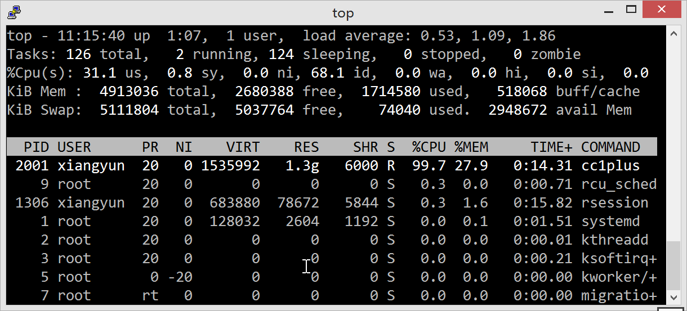
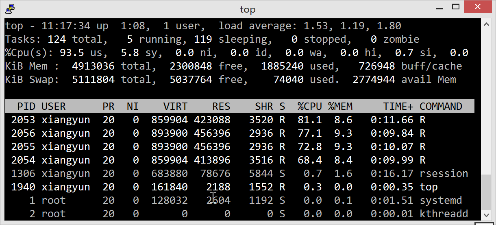

附录 A
表格
| mean | var | sd | 2.5% | 25% | 50% | 75% | 97.5% | |
|---|---|---|---|---|---|---|---|---|
| \(p(x_{1})\) | 0.476 | 0.019 | 0.138 | 0.231 | 0.368 | 0.467 | 0.573 | 0.759 |
| \(p(x_{2})\) | 0.423 | 0.017 | 0.129 | 0.190 | 0.331 | 0.417 | 0.510 | 0.695 |
| \(p(x_{3})\) | 0.313 | 0.015 | 0.122 | 0.106 | 0.221 | 0.309 | 0.389 | 0.582 |
| \(p(x_{4})\) | 0.470 | 0.020 | 0.141 | 0.204 | 0.372 | 0.466 | 0.564 | 0.755 |
| \(p(x_{5})\) | 0.431 | 0.018 | 0.133 | 0.181 | 0.338 | 0.425 | 0.527 | 0.686 |
| \(p(x_{6})\) | 0.516 | 0.017 | 0.131 | 0.256 | 0.429 | 0.517 | 0.612 | 0.766 |
| \(p(x_{7})\) | 0.580 | 0.017 | 0.132 | 0.326 | 0.485 | 0.583 | 0.669 | 0.831 |
| \(p(x_{8})\) | 0.483 | 0.019 | 0.138 | 0.220 | 0.386 | 0.484 | 0.578 | 0.736 |
| \(p(x_{9})\) | 0.487 | 0.020 | 0.141 | 0.235 | 0.383 | 0.482 | 0.584 | 0.772 |
| \(p(x_{10})\) | 0.333 | 0.014 | 0.117 | 0.121 | 0.251 | 0.326 | 0.411 | 0.583 |
| \(p(x_{11})\) | 0.262 | 0.013 | 0.112 | 0.083 | 0.175 | 0.248 | 0.334 | 0.499 |
| \(p(x_{12})\) | 0.367 | 0.016 | 0.126 | 0.150 | 0.279 | 0.358 | 0.446 | 0.627 |
| \(p(x_{13})\) | 0.491 | 0.017 | 0.129 | 0.248 | 0.403 | 0.487 | 0.579 | 0.742 |
| \(p(x_{14})\) | 0.585 | 0.016 | 0.127 | 0.343 | 0.493 | 0.589 | 0.673 | 0.826 |
| \(p(x_{15})\) | 0.573 | 0.016 | 0.125 | 0.320 | 0.491 | 0.576 | 0.660 | 0.811 |
| \(p(x_{16})\) | 0.610 | 0.016 | 0.127 | 0.347 | 0.526 | 0.612 | 0.701 | 0.843 |
| \(p(x_{17})\) | 0.336 | 0.016 | 0.127 | 0.130 | 0.241 | 0.323 | 0.415 | 0.605 |
| \(p(x_{18})\) | 0.299 | 0.013 | 0.114 | 0.108 | 0.217 | 0.292 | 0.368 | 0.566 |
| \(p(x_{19})\) | 0.269 | 0.012 | 0.109 | 0.088 | 0.190 | 0.258 | 0.337 | 0.502 |
| \(p(x_{20})\) | 0.429 | 0.016 | 0.128 | 0.192 | 0.336 | 0.428 | 0.520 | 0.687 |
| \(p(x_{21})\) | 0.504 | 0.015 | 0.124 | 0.270 | 0.417 | 0.499 | 0.583 | 0.761 |
| \(p(x_{22})\) | 0.550 | 0.015 | 0.121 | 0.308 | 0.469 | 0.556 | 0.633 | 0.785 |
| \(p(x_{23})\) | 0.617 | 0.015 | 0.123 | 0.360 | 0.538 | 0.622 | 0.705 | 0.842 |
| \(p(x_{24})\) | 0.646 | 0.015 | 0.124 | 0.380 | 0.563 | 0.660 | 0.732 | 0.868 |
| \(p(x_{25})\) | 0.246 | 0.012 | 0.111 | 0.066 | 0.166 | 0.237 | 0.312 | 0.483 |
| \(p(x_{26})\) | 0.287 | 0.013 | 0.113 | 0.097 | 0.206 | 0.275 | 0.356 | 0.541 |
| \(p(x_{27})\) | 0.341 | 0.014 | 0.118 | 0.121 | 0.261 | 0.332 | 0.416 | 0.586 |
| \(p(x_{28})\) | 0.525 | 0.016 | 0.128 | 0.298 | 0.427 | 0.524 | 0.609 | 0.772 |
| \(p(x_{29})\) | 0.540 | 0.016 | 0.128 | 0.295 | 0.446 | 0.542 | 0.631 | 0.783 |
| \(p(x_{30})\) | 0.583 | 0.015 | 0.123 | 0.348 | 0.496 | 0.583 | 0.671 | 0.813 |
| \(p(x_{31})\) | 0.517 | 0.017 | 0.130 | 0.251 | 0.432 | 0.525 | 0.606 | 0.756 |
| \(p(x_{32})\) | 0.689 | 0.014 | 0.117 | 0.437 | 0.612 | 0.693 | 0.775 | 0.898 |
| \(p(x_{33})\) | 0.260 | 0.012 | 0.111 | 0.075 | 0.178 | 0.251 | 0.328 | 0.494 |
| \(p(x_{34})\) | 0.304 | 0.014 | 0.119 | 0.101 | 0.218 | 0.292 | 0.371 | 0.577 |
| \(p(x_{35})\) | 0.394 | 0.016 | 0.125 | 0.171 | 0.308 | 0.389 | 0.472 | 0.669 |
| \(p(x_{36})\) | 0.497 | 0.017 | 0.130 | 0.249 | 0.412 | 0.495 | 0.587 | 0.746 |
| \(p(x_{37})\) | 0.604 | 0.017 | 0.131 | 0.346 | 0.518 | 0.606 | 0.700 | 0.844 |
| \(p(x_{38})\) | 0.546 | 0.016 | 0.126 | 0.298 | 0.459 | 0.548 | 0.636 | 0.774 |
| \(p(x_{39})\) | 0.494 | 0.017 | 0.129 | 0.242 | 0.404 | 0.498 | 0.582 | 0.735 |
| \(p(x_{40})\) | 0.639 | 0.015 | 0.123 | 0.394 | 0.559 | 0.647 | 0.724 | 0.864 |
| \(p(x_{41})\) | 0.380 | 0.017 | 0.132 | 0.154 | 0.284 | 0.369 | 0.466 | 0.669 |
| \(p(x_{42})\) | 0.339 | 0.015 | 0.122 | 0.128 | 0.257 | 0.331 | 0.416 | 0.595 |
| \(p(x_{43})\) | 0.318 | 0.014 | 0.118 | 0.111 | 0.234 | 0.311 | 0.398 | 0.552 |
| \(p(x_{44})\) | 0.479 | 0.016 | 0.127 | 0.247 | 0.387 | 0.473 | 0.566 | 0.745 |
| \(p(x_{45})\) | 0.655 | 0.015 | 0.123 | 0.415 | 0.568 | 0.659 | 0.746 | 0.880 |
| \(p(x_{46})\) | 0.601 | 0.015 | 0.123 | 0.354 | 0.519 | 0.607 | 0.689 | 0.839 |
| \(p(x_{47})\) | 0.524 | 0.017 | 0.129 | 0.275 | 0.437 | 0.525 | 0.612 | 0.768 |
| \(p(x_{48})\) | 0.696 | 0.014 | 0.118 | 0.440 | 0.620 | 0.704 | 0.783 | 0.901 |
| \(p(x_{49})\) | 0.353 | 0.015 | 0.124 | 0.122 | 0.266 | 0.348 | 0.433 | 0.615 |
| \(p(x_{50})\) | 0.493 | 0.017 | 0.132 | 0.254 | 0.402 | 0.492 | 0.584 | 0.760 |
| \(p(x_{51})\) | 0.379 | 0.014 | 0.120 | 0.160 | 0.293 | 0.374 | 0.460 | 0.619 |
| \(p(x_{52})\) | 0.378 | 0.016 | 0.128 | 0.135 | 0.282 | 0.376 | 0.470 | 0.620 |
| \(p(x_{53})\) | 0.591 | 0.015 | 0.124 | 0.345 | 0.512 | 0.591 | 0.678 | 0.834 |
| \(p(x_{54})\) | 0.521 | 0.017 | 0.132 | 0.244 | 0.432 | 0.531 | 0.613 | 0.773 |
| \(p(x_{55})\) | 0.566 | 0.016 | 0.125 | 0.305 | 0.480 | 0.573 | 0.654 | 0.789 |
| \(p(x_{56})\) | 0.703 | 0.014 | 0.120 | 0.449 | 0.622 | 0.711 | 0.794 | 0.900 |
| \(p(x_{57})\) | 0.494 | 0.019 | 0.137 | 0.235 | 0.400 | 0.495 | 0.587 | 0.762 |
| \(p(x_{58})\) | 0.606 | 0.019 | 0.139 | 0.328 | 0.515 | 0.608 | 0.702 | 0.857 |
| \(p(x_{59})\) | 0.482 | 0.018 | 0.133 | 0.236 | 0.387 | 0.478 | 0.575 | 0.725 |
| \(p(x_{60})\) | 0.443 | 0.017 | 0.130 | 0.195 | 0.349 | 0.447 | 0.536 | 0.695 |
| \(p(x_{61})\) | 0.636 | 0.015 | 0.124 | 0.390 | 0.547 | 0.638 | 0.723 | 0.867 |
| \(p(x_{62})\) | 0.620 | 0.015 | 0.122 | 0.371 | 0.537 | 0.623 | 0.708 | 0.843 |
| \(p(x_{63})\) | 0.568 | 0.016 | 0.128 | 0.321 | 0.470 | 0.571 | 0.660 | 0.802 |
| \(p(x_{64})\) | 0.633 | 0.017 | 0.131 | 0.354 | 0.545 | 0.644 | 0.729 | 0.861 |
| mean | se_mean | sd | 2.5% | 25% | 50% | 75% | 97.5% | n_eff | Rhat | |
|---|---|---|---|---|---|---|---|---|---|---|
| \(\alpha\) | 0.50 | 0.02 | 0.63 | -0.77 | 0.08 | 0.53 | 0.92 | 1.80 | 1000.00 | 1.00 |
| \(\phi\) | 0.39 | 0.00 | 0.06 | 0.28 | 0.34 | 0.38 | 0.42 | 0.51 | 777.31 | 1.00 |
| \(\sigma^2\) | 2.47 | 0.02 | 0.54 | 1.59 | 2.10 | 2.42 | 2.80 | 3.73 | 1000.00 | 1.00 |
| lp__ | 722.28 | 0.39 | 6.83 | 708.00 | 718.14 | 722.49 | 726.91 | 734.71 | 312.69 | 1.03 |
代码
模拟平稳空间高斯过程
// Sample from a Gaussian process using exponentiated covariance function.
// Fixed kernel hyperparameters: phi=0.15, sigma=sqrt(1)
data {
int<lower=1> N;
real<lower=0> phi;
real<lower=0> sigma;
}
transformed data {
vector[N] zeros;
zeros = rep_vector(0, N);
}
model {}
generated quantities {
real x[N];
vector[N] f;
for (n in 1:N)
x[n] = uniform_rng(-2,2);
{
matrix[N, N] cov;
matrix[N, N] L_cov;
// cov = cov_exp_quad(x, sigma, phi);
for (i in 1:(N - 1)) {
cov[i, i] = square(sigma);
for (j in (i + 1):N) {
cov[i, j] = square(sigma) * exp(- fabs(x[i] - x[j]) * inv(phi));
cov[j, i] = cov[i, j];
}
}
cov[N, N] = square(sigma);
for (n in 1:N)
cov[n, n] = cov[n, n] + 1e-12;
L_cov = cholesky_decompose(cov);
f = multi_normal_cholesky_rng(zeros, L_cov);
}
}模拟空间广义线性模型
generate_sim_data <- function(N = 49, intercept = -1.0,
slope1 = 1.0, slope2 = 0.5,
lscale = 1, sdgp = 1,
cov.model = "exp_quad", type = "binomal") {
# set.seed(2018)
## 单位区域上采样
d <- expand.grid(
d1 = seq(0, 1, l = sqrt(N)),
d2 = seq(0, 1, l = sqrt(N))
)
D <- as.matrix(dist(d)) # 计算采样点之间的欧氏距离
switch (cov.model,
matern = {
phi = lscale
corr_m = geoR::matern(D, phi = phi, kappa = 2) # 固定的 kappa = 2
m = sdgp^2 * corr_m
},
exp_quad = {
phi <- 2 * lscale^2
m <- sdgp^2 * exp(-D^2 / phi) # 多元高斯分布的协方差矩阵
}
)
# powered.exponential (or stable)
# rho(h) = exp[-(h/phi)^kappa] if 0 < kappa <= 2 此处 kappa 固定为 2
S <- MASS::mvrnorm(1, rep(0, N), m) # 产生服从多元高斯分布的随机数
# 模拟两个固定效应
x1 <- rnorm(N, 0, 1)
x2 <- rnorm(N, 0, 4)
switch(type,
binomal = {
units.m <- rep(100, N) # N 个 100
pred <- intercept + slope1 * x1 + slope2 * x2 + S
mu <- exp(pred) / (1 + exp(pred))
y <- rbinom(N, size = 100, prob = mu) # 每个采样点抽取100个样本
data.frame(d, y, units.m, x1, x2)
},
poisson = {
pred <- intercept + slope1 * x1 + slope2 * x2 + S
y <- rpois(100, lambda = exp(pred)) # lambda 是泊松分布的期望
# Y ~ Possion(lambda) g(u) = ln(u) u = lambda = exp(g(u))
data.frame(d, y, x1, x2)
}
)
}HMC 算法
# 加载程序包
library(rstan)
library(brms)
# 以并行方式运行 STAN-MCMC 算法，指定 CPU 的核心数
options(mc.cores = parallel::detectCores())
# 将编译后的模型写入磁盘，可防止重新编译
rstan_options(auto_write = TRUE)
theme_set(theme_default())
prior <- c(
set_prior("normal(0,10)", class = "b"), # 均值0 标准差 10 的先验
set_prior("lognormal(0,1)", class = "lscale"),
set_prior("lognormal(0,1)", class = "sdgp")
)
sim_binom_data <- generate_sim_data(type = "binomal")
benchmark.binomal <- microbenchmark::microbenchmark({
fit.binomal <- brm(y | trials(units.m) ~ 0 + intercept + x1 + x2 + gp(d1, d2),
sim_binom_data,
prior = prior,
chains = 4, thin = 5, iter = 15000, warmup = 5000,
algorithm = "sampling", family = binomial()
)
}, times = 10L)
summary(fit.binomal)
sim_poisson_data <- generate_sim_data(type = "poisson")
benchmark.poisson <- microbenchmark::microbenchmark({
fit.poisson <- brm(y ~ 0 + intercept + x1 + x2 + gp(d1, d2),
sim_poisson_data,
prior = prior,
chains = 4, thin = 5, iter = 15000, warmup = 5000,
algorithm = "sampling", family = poisson()
)
}, times = 10L)
summary(fit.poisson)
plot(fit.poisson)交互图
图 7.1: 朗格拉普岛上核污染分布图
编译信息

图 7.2: 基于 Stan 编程的模型编译和采样过程图
硬件环境
cat(system("cat /proc/cpuinfo | grep name | cut -f2 -d: | uniq -c", intern = TRUE), sep = "\n")
#> 2 Intel(R) Xeon(R) CPU @ 2.30GHz
parallel::detectCores()
#> [1] 2系统环境
| setting | value |
|---|---|
| version | R version 3.5.1 (2017-01-27) |
| os | Ubuntu 14.04.5 LTS |
| system | x86_64, linux-gnu |
| ui | X11 |
| language | (EN) |
| collate | en_US.UTF-8 |
| ctype | en_US.UTF-8 |
| tz | UTC |
| date | 2018-10-28 |
软件环境
| package | version | source |
|---|---|---|
| assertthat | 0.2.0 | CRAN (R 3.5.1) |
| backports | 1.1.2 | CRAN (R 3.5.1) |
| base64enc | 0.1-3 | CRAN (R 3.5.1) |
| BH | 1.66.0-1 | CRAN (R 3.5.1) |
| bookdown | 0.7.21 | Github (rstudio/bookdown@d1f44e5) |
| callr | 3.0.0 | CRAN (R 3.5.1) |
| cli | 1.0.1 | CRAN (R 3.5.1) |
| colorspace | 1.3-2 | CRAN (R 3.5.1) |
| crayon | 1.3.4 | CRAN (R 3.5.1) |
| desc | 1.2.0 | CRAN (R 3.5.1) |
| digest | 0.6.18 | CRAN (R 3.5.1) |
| evaluate | 0.12 | CRAN (R 3.5.1) |
| fansi | 0.4.0 | CRAN (R 3.5.1) |
| formatR | 1.5 | CRAN (R 3.5.1) |
| gdtools | 0.1.7 | CRAN (R 3.5.1) |
| ggplot2 | 3.1.0 | CRAN (R 3.5.1) |
| glue | 1.3.0 | CRAN (R 3.5.1) |
| gridExtra | 2.3 | CRAN (R 3.5.1) |
| gtable | 0.2.0 | CRAN (R 3.5.1) |
| highr | 0.7 | CRAN (R 3.5.1) |
| htmldeps | 0.1.1 | Github (rstudio/htmldeps@c1023e0) |
| htmltools | 0.3.6 | CRAN (R 3.5.1) |
| inline | 0.3.15 | CRAN (R 3.5.1) |
| jsonlite | 1.5 | CRAN (R 3.5.1) |
| knitr | 1.20 | CRAN (R 3.5.1) |
| labeling | 0.3 | CRAN (R 3.5.1) |
| lattice | 0.20-35 | CRAN (R 3.5.1) |
| lazyeval | 0.2.1 | CRAN (R 3.5.1) |
| loo | 2.0.0 | CRAN (R 3.5.1) |
| magrittr | 1.5 | CRAN (R 3.5.1) |
| markdown | 0.8 | CRAN (R 3.5.1) |
| MASS | 7.3-50 | CRAN (R 3.5.1) |
| Matrix | 1.2-14 | CRAN (R 3.5.1) |
| matrixStats | 0.54.0 | CRAN (R 3.5.1) |
| mgcv | 1.8-24 | CRAN (R 3.5.1) |
| mime | 0.6 | CRAN (R 3.5.1) |
| munsell | 0.5.0 | CRAN (R 3.5.1) |
| nlme | 3.1-137 | CRAN (R 3.5.1) |
| pillar | 1.3.0 | CRAN (R 3.5.1) |
| pkgbuild | 1.0.2 | CRAN (R 3.5.1) |
| plyr | 1.8.4 | CRAN (R 3.5.1) |
| prettyunits | 1.0.2 | CRAN (R 3.5.1) |
| processx | 3.2.0 | CRAN (R 3.5.1) |
| ps | 1.2.0 | CRAN (R 3.5.1) |
| R6 | 2.3.0 | CRAN (R 3.5.1) |
| RColorBrewer | 1.1-2 | CRAN (R 3.5.1) |
| Rcpp | 0.12.19 | CRAN (R 3.5.1) |
| RcppEigen | 0.3.3.4.0 | CRAN (R 3.5.1) |
| reshape2 | 1.4.3 | CRAN (R 3.5.1) |
| rlang | 0.3.0.1 | CRAN (R 3.5.1) |
| rmarkdown | 1.10.14 | Github (rstudio/rmarkdown@442e5bf) |
| rprojroot | 1.3-2 | CRAN (R 3.5.1) |
| rstan | 2.18.1 | CRAN (R 3.5.1) |
| scales | 1.0.0 | CRAN (R 3.5.1) |
| sessioninfo | 1.1.0 | CRAN (R 3.5.1) |
| StanHeaders | 2.18.0 | CRAN (R 3.5.1) |
| stringi | 1.2.4 | CRAN (R 3.5.1) |
| stringr | 1.3.1 | CRAN (R 3.5.1) |
| svglite | 1.2.1 | CRAN (R 3.5.1) |
| tibble | 1.4.2 | CRAN (R 3.5.1) |
| tinytex | 0.9 | CRAN (R 3.5.1) |
| utf8 | 1.1.4 | CRAN (R 3.5.1) |
| viridisLite | 0.3.0 | CRAN (R 3.5.1) |
| withr | 2.1.2 | CRAN (R 3.5.1) |
| xfun | 0.4 | CRAN (R 3.5.1) |
| yaml | 2.2.0 | CRAN (R 3.5.1) |